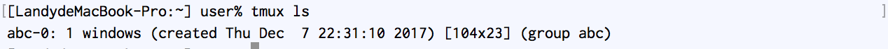

怎么用Tmux?
首先,先建立一个Tmux进程, 这里有专门的术语session.
tmux new -s abc
我们通过上面的命令得到了一个Tmux session,名字叫abc.

这个时候Terminal底部的绿色状态栏提示我们,目前是在一个Tmux的session中.现在我们就可以做一些分割窗口的操作了.Tmux的所有命令都有同样的一个前缀,就是"ctrl-b"1. 我们按"ctrl-b", 然后按"%", 为了便于说明我用"prefix %"来表示. Terminal就被竖直分成了两个部分.这每一部分称为pane.在pane之间来回移动光标的命令是"prefix o"2.

我们先断开session连接, 命令是"prefix d".
然后在terminal中输入命令，来查看后台有哪些Tmux的session.
tmux ls
结果显示如下, 有一个Tmux后台进程, session名为abc.
我们再通过下面的命令,重新连接到session abc去.
tmux attach -t abc